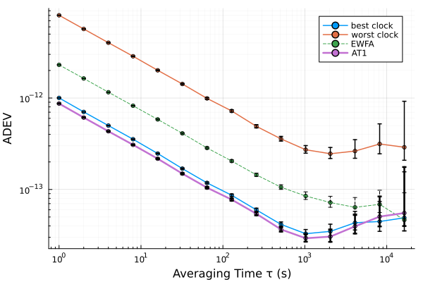

From one clock to an ensemble: noise model, Kalman filter, timescale
A clock's stability plot is also the input to its state model. This tutorial fits a noise model to a simulated clock, turns it into a ClockModel, tracks the clock with a Kalman filter, asks how long it can hold over, and then combines four clocks into a timescale that is steadier than any of them. The data are simulated, so every estimate can be checked against the truth.
using SigmaTau
using Random
using StatisticsOne clock: from ADEV to a state model
White FM at short τ and random-walk FM at long τ, the noise of a typical atomic frequency standard, plus a little white PM from the measurement.
τ₀ = 1.0
m_true = ClockModel(; tau0 = τ₀, R = 1e-22, q1 = 1e-24, q2 = 1e-30)
p, truth = simulate_clock(m_true, 100_000; rng = Xoshiro(1));
r = mhdev(p)StabilityResult(:mhdev, 15 pts, τ∈[1, 1.638e+04] s, with CI)
tau dev neff ci_lo ci_hi edf noise
1 1.833e-11 99997 1.827e-11 1.839e-11 4.329e+04 WHPM
2 6.443e-12 99993 6.421e-12 6.466e-12 4.04e+04 WHPM
4 2.299e-12 99985 2.289e-12 2.309e-12 2.579e+04 WHPM
8 8.472e-13 99969 8.422e-13 8.523e-13 1.385e+04 WHPM
16 3.289e-13 99937 3.261e-13 3.317e-13 7054 WHPM
32 1.576e-13 99873 1.555e-13 1.598e-13 2736 FLPM
64 8.914e-14 99745 8.745e-14 9.093e-14 1317 WHFM
128 5.917e-14 99489 5.76e-14 6.088e-14 657.1 WHFM
256 4.416e-14 98977 4.256e-14 4.596e-14 339.5 FLPM
512 3.13e-14 97953 2.969e-14 3.319e-14 162.2 WHFM
1024 2.28e-14 95905 2.119e-14 2.484e-14 79.96 FLFM
… 15 rows totalnoise_fit builds the power-law model one noise type at a time, each fitted on the τ range where it dominates, with the slope fixed. The indices pick points of r.tau.
f = noise_fit(r)
add_component!(f, :WHPM, 1:2)
add_component!(f, :WHFM, 4:9)
add_component!(f, :RWFM, length(r.tau)-4:length(r.tau))
fNoiseFit to mhdev (3 components)
h2 WHPM 7.872e-21 τ 1–2 s
h0 WHFM 2.206e-24 τ 8–256 s
h-2 RWFM 2.639e-32 τ 1.02e+03–1.64e+04 sclock_model turns the levels into the filter's process noise. Each should land within the scatter of a single realization of the truth.
m = clock_model(f)
[m.R m_true.R; m.q1 m_true.q1; m.q2 m_true.q2]3×2 Matrix{Float64}:
9.97017e-23 1.0e-22
1.10301e-24 1.0e-24
5.20914e-31 1.0e-30The Kalman filter
kalman_filter estimates phase and frequency at every sample; innovation_check tests whether the model explains the record (its normalized innovations should be white with unit variance).
kf = kalman_filter(p, m)
innovation_check(kf).okfalseThe frequency estimate tracks the true random-walk frequency to within its own 1σ error bar:
err = kf.x[:, 2] .- truth[:, 2]
std(err[1000:end]), sqrt(mean(kf.P[2, 2, 1000:end]))(3.217541394873317e-14, 2.7677378630536875e-14)holdover_error answers the operational question: once the reference is lost, how far does the clock's time wander, 1σ, after τ seconds?
holdover_error(kf, [60.0, 3600.0, 86400.0])3-element Vector{Float64}:
8.932800237729067e-12
1.4837694671236884e-10
1.0852721575098297e-8Four clocks: a timescale
Now four clocks of different quality, each read against an ideal reference (reference = 0), so the scale's own stability can be seen directly.
ms = [ClockModel(; tau0 = τ₀, q1 = 1e-24 * 4.0^k, q2 = 1e-30 * 4.0^k) for k in 0:3]
cc, _ = simulate_ensemble(ms, 50_000; reference = 0, rng = Xoshiro(2));EWFA averages the clocks' phases with equal weights, so the noisiest clock pulls the scale down. AT1 learns each clock's prediction-error variance and weights it by the inverse.
ewfa = timescale(cc; algorithm = :ewfa)
at1 = timescale(cc; algorithm = :at1)
vec(mean(at1.weights[end÷2:end, :]; dims = 1))4-element Vector{Float64}:
0.7066447367055215
0.22189482874878608
0.05721477530256063
0.01424565924313157AT1's weights fall from the best clock to the worst. Against the ideal reference, the AT1 scale is steadier than both the EWFA scale and the best single clock:
τ = [1, 10, 100, 1000]
[adev(cc[1], τ; ci = false).dev adev(timescale_phase(ewfa), τ; ci = false).dev adev(timescale_phase(at1), τ; ci = false).dev]4×3 Matrix{Float64}:
1.00266e-12 2.30537e-12 8.69383e-13
3.16344e-13 7.37349e-13 2.75624e-13
9.5777e-14 2.30824e-13 8.58068e-14
3.29549e-14 8.5379e-14 2.93789e-14In practice the reference is one of the clocks or a laboratory standard, and timescale_phase is the scale against it. The same scale comes from the command line with sigmatau timescale FILE --value-cols 2,3,4,5, and from the explorer's Ensemble page.
using Plots
p1 = plot(adev(cc[1]); label = "best clock", ylabel = "σ_y(τ)", lw = 1.5)
plot!(p1, adev(cc[4]); label = "worst clock", lw = 1.5)
plot!(p1, adev(timescale_phase(ewfa)); label = "EWFA", ls = :dash)
plot!(p1, adev(timescale_phase(at1)); label = "AT1", lw = 2.5)